Marketplace de persona a persona, tiendas con inventario y variantes (Mercado Shops) y una red B2B donde cada negocio se especializa en lo que hace mejor y surte el resto con sus pares.
Capturas reales de la app en ejecución, con los datos de ejemplo que crea la semilla: 13 personas, 4 tiendas, ~150 artículos, pedidos, calificaciones y una red de negocios ya armada.
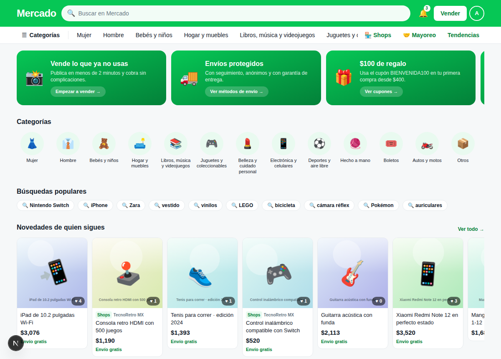
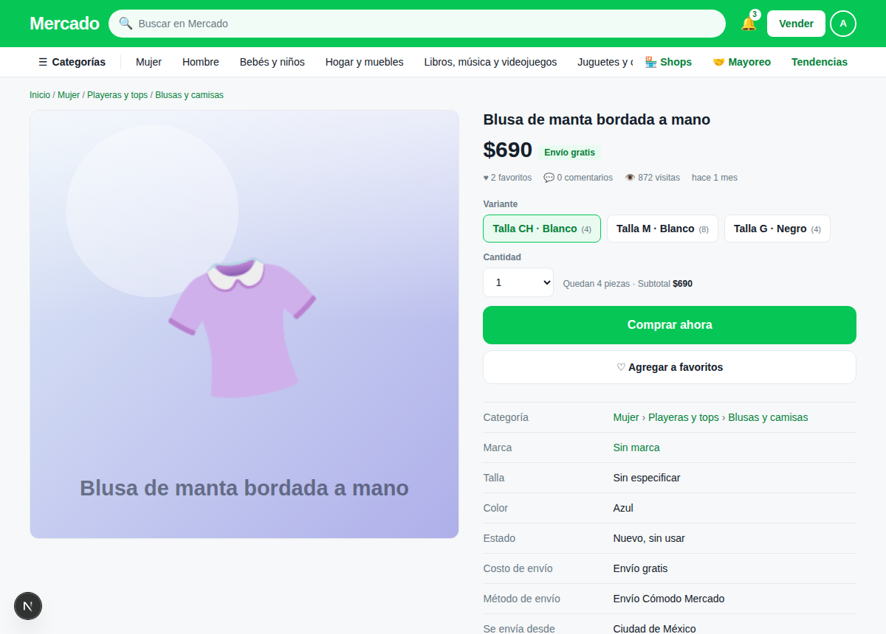
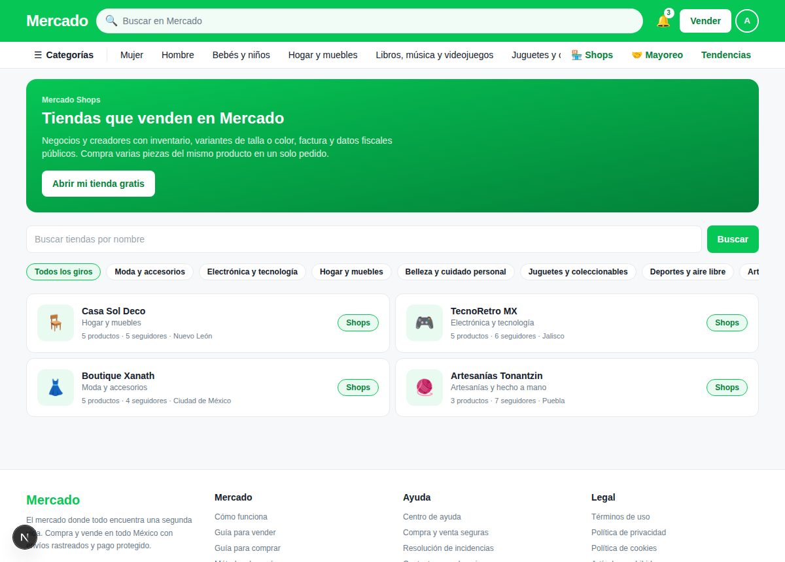
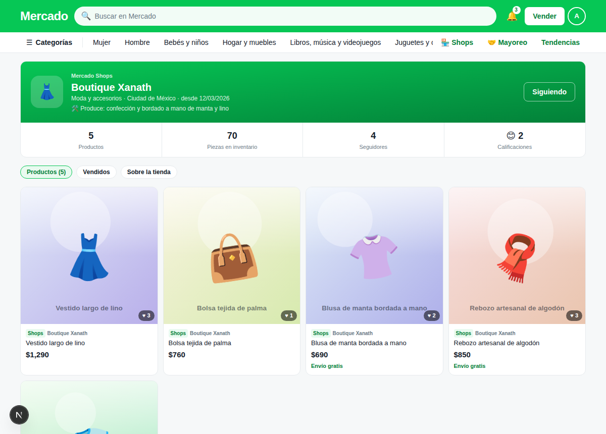
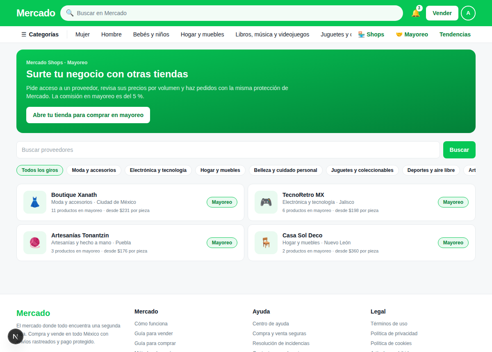
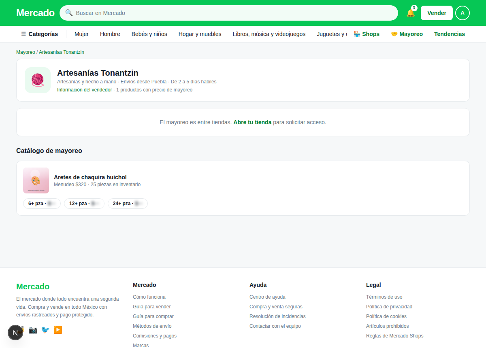
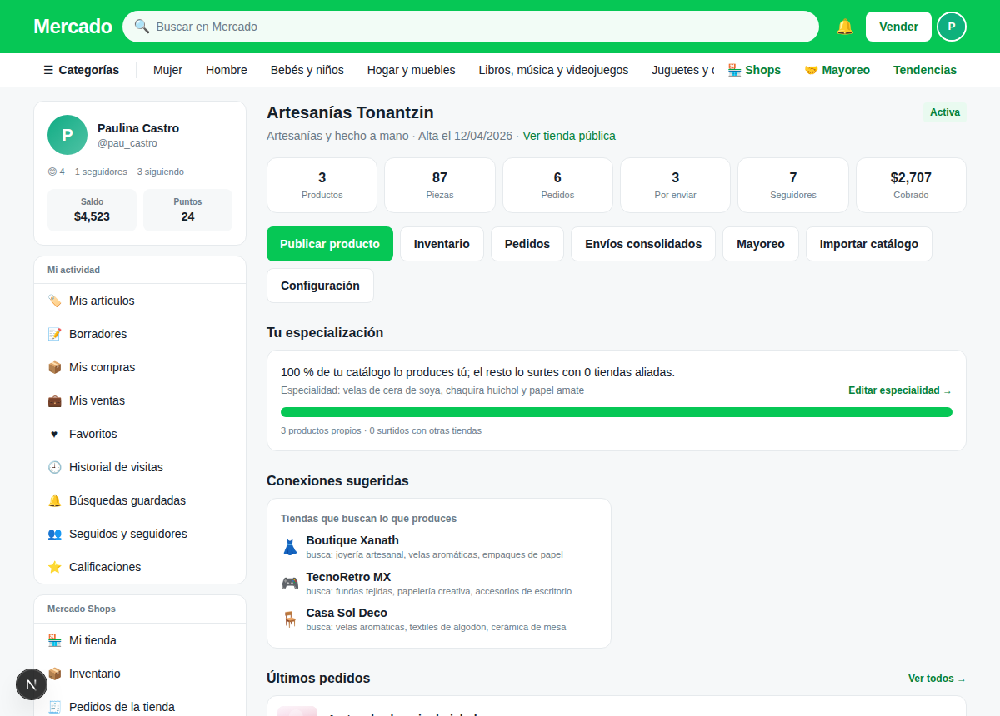
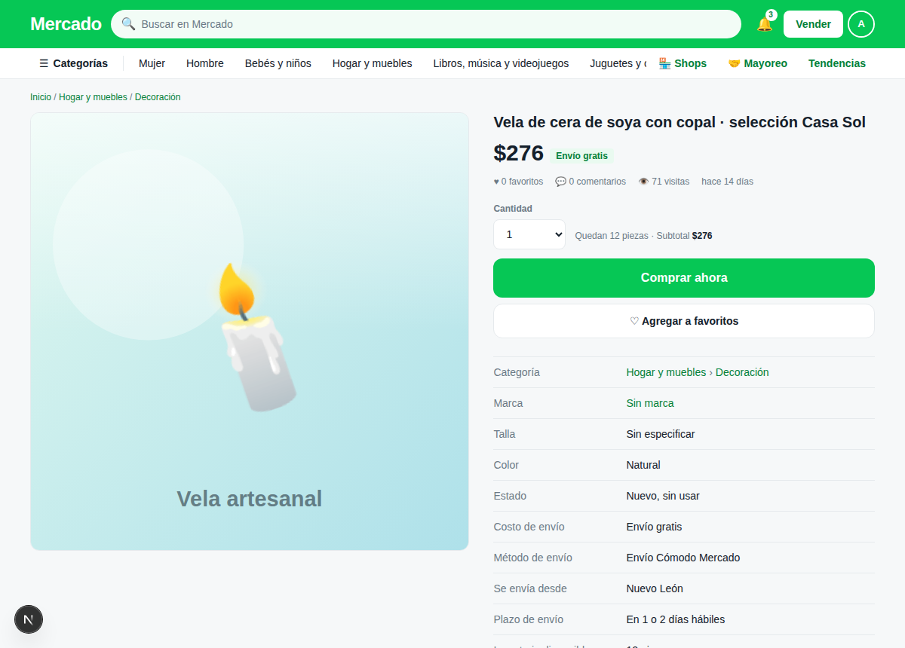
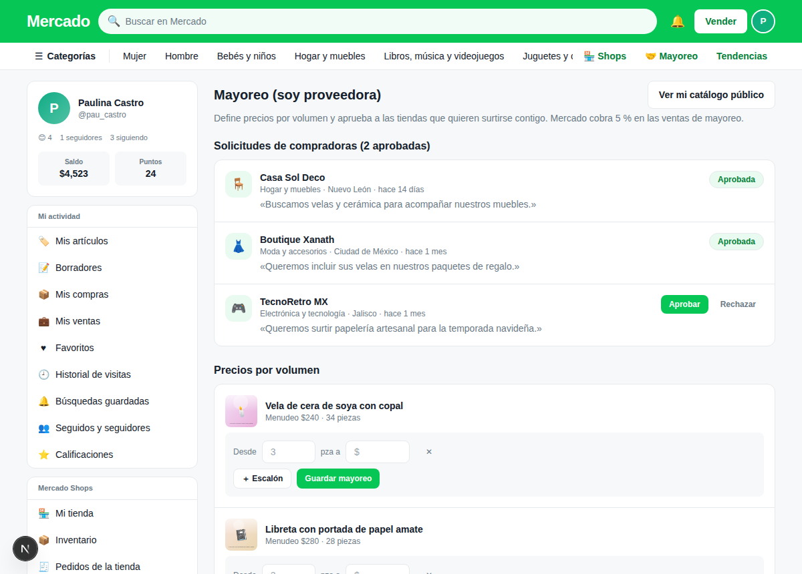
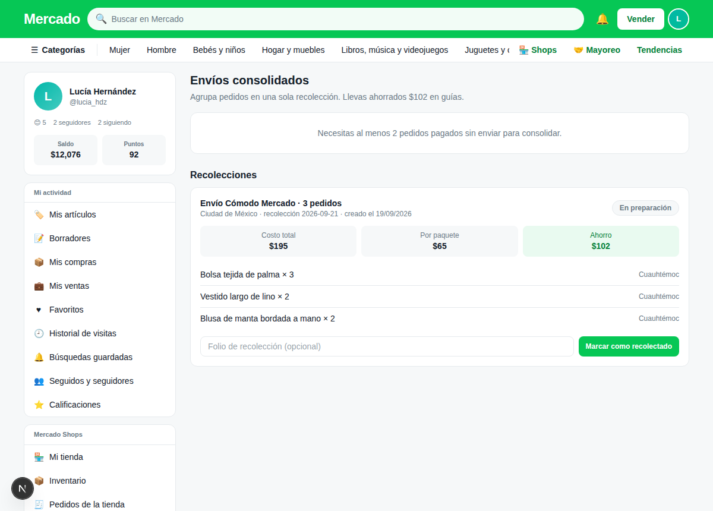
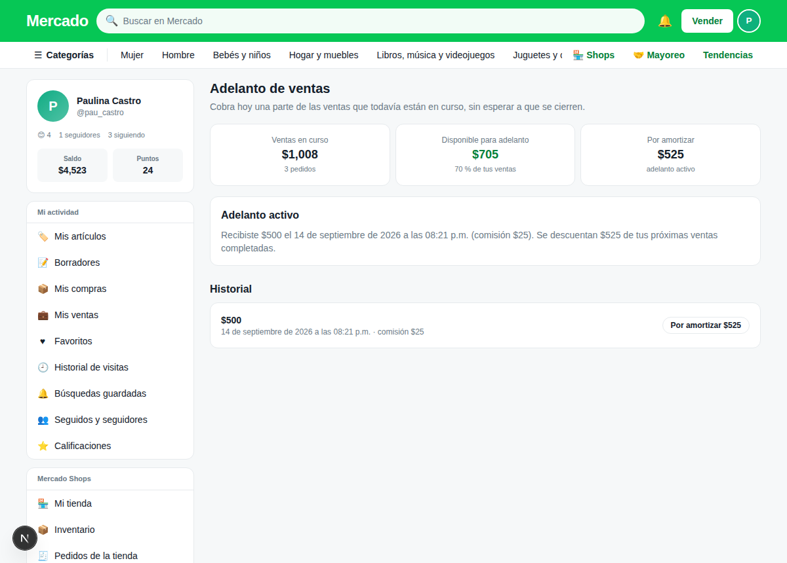
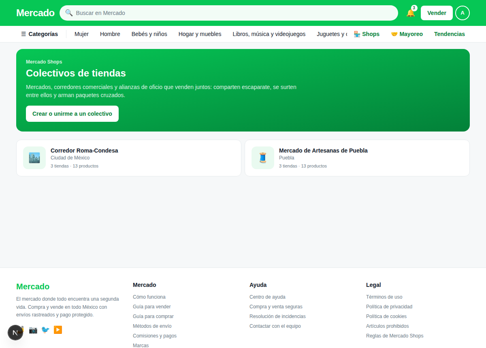
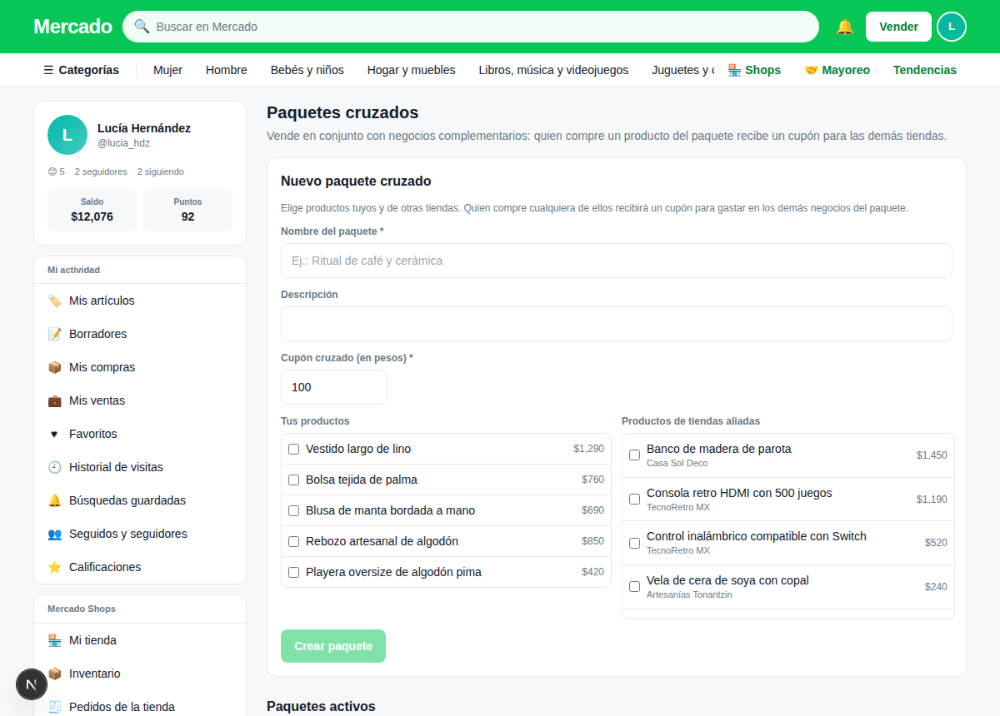
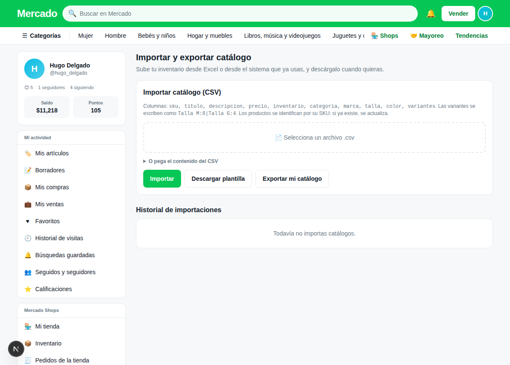
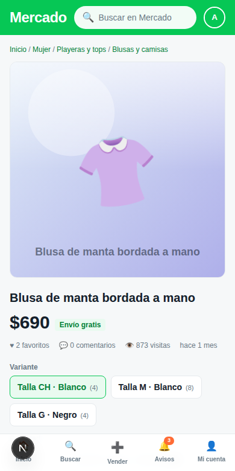
El mayoreo entre tiendas no es sólo comprar más barato: permite que cada negocio se concentre en lo que sabe hacer y complete su tienda con lo que otros hacen mejor, sin perder el crédito de quien produce.
Envíos consolidados: varios pedidos en una recolección, tarifa por paquete y ahorro calculado.
Mercados, corredores comerciales y alianzas de oficio con página y escaparate común.
Paquetes entre tiendas: comprar en una genera un cupón para las demás del paquete.
Liquidez sobre pedidos en curso, con amortización automática y comisión del 5 %.
Alta masiva por SKU con variantes e inventario; exportación del catálogo completo.
Datos fiscales públicos por tienda, como pide la Ley Federal de Protección al Consumidor.
No es una traducción: cambian la moneda, la geografía, los métodos de pago, la mensajería y el marco legal.
| Elemento | Implementación |
|---|---|
| Moneda | Peso mexicano (MXN), formato es-MX, precios desde $30 |
| Territorio | 32 estados, municipios y alcaldías, C.P. de 5 dígitos, teléfonos de 10 dígitos, direcciones con colonia |
| Pagos | Tarjeta, meses sin intereses (3, 6, 9 y 12 desde $2,000), efectivo en tiendas, SPEI, saldo, puntos y PayPal |
| Cobros | Transferencia a CLABE de 18 dígitos (mínimo $300, comisión $25) |
| Envíos | Envío Fácil y Envío Cómodo con guía prepagada y rastreo; correo nacional; paquetería propia |
| Idioma | Español de México: playera, tenis, bolsa, chamarra, celular, computadora, carriola, calificaciones… |
| Legal | Ley Federal de Protección al Consumidor, LFPDPPP con derechos ARCO, Profeco y artículos prohibidos según la normativa mexicana |
Publicación con fotos, ofertas y regateo, comentarios, favoritos, búsquedas guardadas, historial, cupones, puntos y saldo.
Pago retenido, envío con guía, confirmación de recepción, calificación mutua, cancelación con reembolso y mensajería privada.
Alta con datos fiscales, revisión, inventario, variantes con SKU, pedidos por estado y panel de la tienda.
La aplicación es dinámica (Server Actions y base de datos), así que esta página de GitHub Pages es un recorrido estático. Para usarla de verdad basta con clonarla:
git clone -b claude/lucid-meitner-eebxnm https://github.com/to49ra16s7azr9u2-cmd/mercado.git
cd mercado
npm install
npm run seed # base de datos de ejemplo
npm run dev # http://localhost:3000Cuenta de demostración: demo@mercado.mx / demo1234.
Las demás cuentas de ejemplo usan mercado1234.
npm run test:e2e) recorre 27 pasos:
desde registrarse y comprar hasta abrir tienda, surtirse en mayoreo, revender con crédito al
taller, consolidar envíos y pedir un adelanto.
メルカリ相当の機能をひととおり備えたクローンのメキシコ版です。配色は LINE グリーン（#06C755）、UI はメキシコのスペイン語、通貨は MXN。
出品・検索・いいね・コメント・値下げ交渉・購入・取引メッセージ・発送通知・受取評価・相互評価・売上金・ポイント・クーポン・本人確認・通知設定。
事業者登録（RFC等の審査）、在庫とバリエーション管理、複数個購入、ショップ運営ダッシュボード、特定商取引法にあたる「Información del vendedor」表示。
各店が「自分の専門」と「仕入れたいもの」を宣言 → 取引先マッチングと承認 → 数量別卸価格での発注 → 仕入れた商品を自店に再出品（生産者クレジット付き）→ 専門特化率の可視化。
共同集荷による配送費削減、コレクティブ（市場・商店街単位の共同出店）、店舗横断クロスセルクーポン、売掛金の前払い、CSV 一括取り込み。
このページは静的なショーケースです。アプリ本体は
npm install && npm run seed && npm run dev でローカル起動できます。
{kind=link}
{kind=link}
{kind=link}
{kind=link}
{kind=link}
{kind=link}
{kind=link}
{kind=link}
{kind=link}
{kind=link}
{kind=link}
{kind=link}
{kind=link}
{kind=link}
{kind=link}